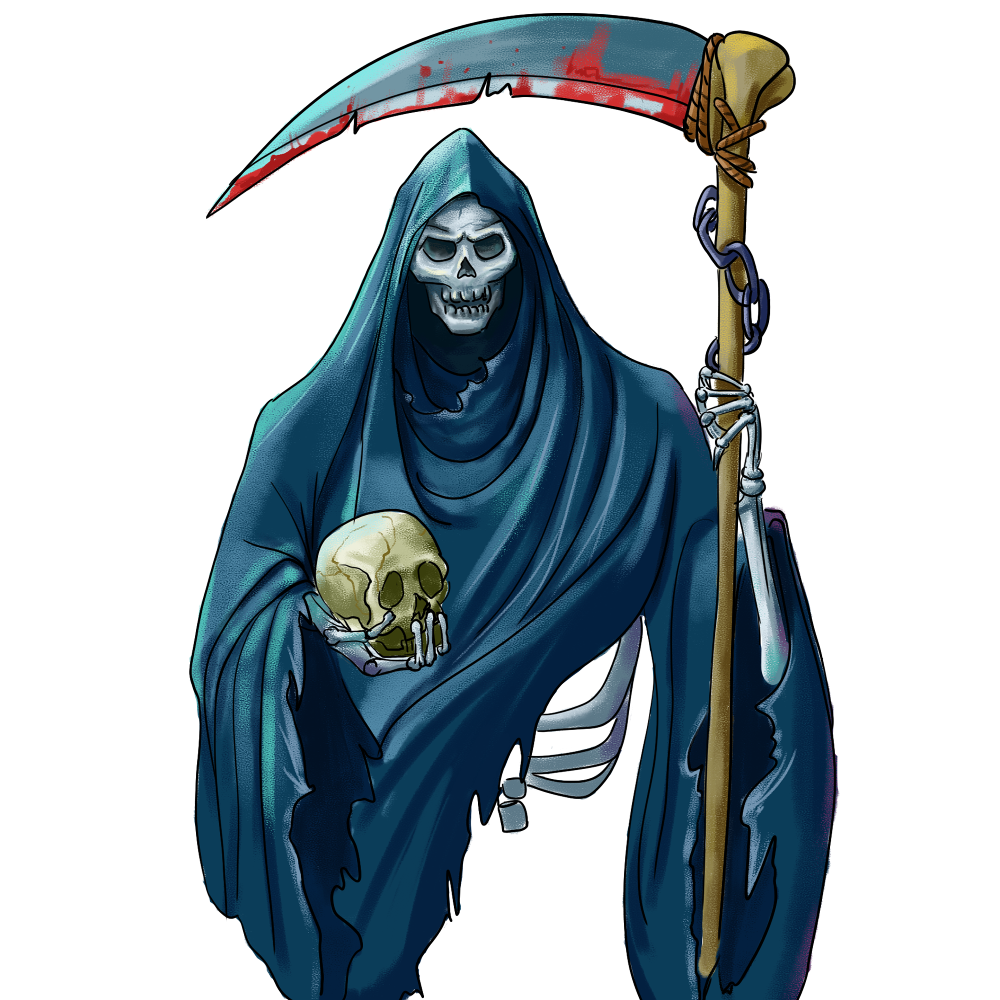
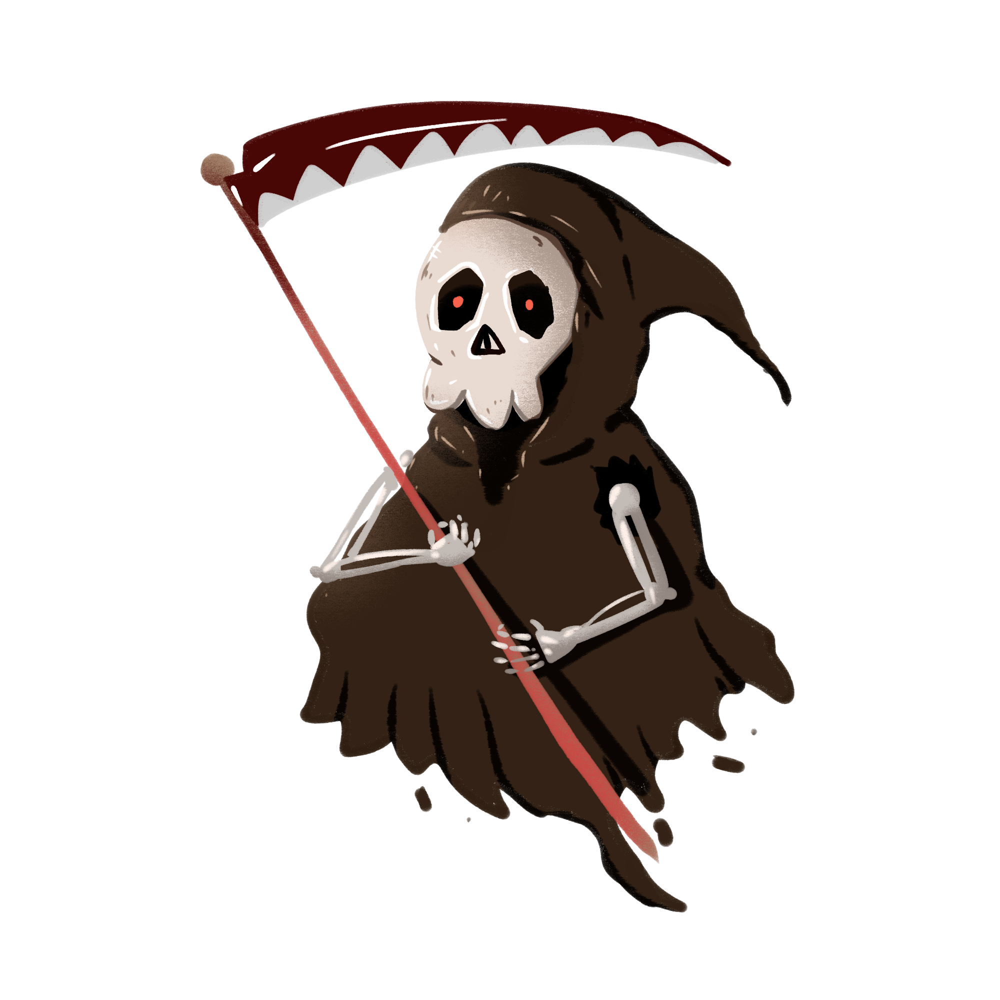

首页
离开
帮助
万圣节
圣诞节
复活节
升天节
受难节
万圣节简介
万圣节又叫诸圣节，在每年的11月1日，是西方的传统节日；而万圣节前夜的10月31日是这个节日最热闹的时刻。在中文里，常常把万圣节前夜（Halloween）讹译为万圣节（All Saints' Day）。为庆祝万圣节的来临，小孩会装扮成各种可爱的鬼怪向逐家逐户地敲门，要求获得糖果，否则就会捣蛋。而同时传说这一晚，各种鬼怪也会装扮成小孩混入群众之中一起庆祝万圣节的来临，而人类为了让鬼怪更融洽才装扮成各种鬼怪。

万圣节意义
两千多年前，基督教会把11月1日定为“天下圣徒之日”。传说自公元前五百年，居住在爱尔兰、苏格兰等地的凯尔特人把这节日往前移了一天。他们认为该日是夏天正式结束的日子，也就是新年伊始，严冬开始的一天。那时人们相信，故人的亡魂会在这一天回到故居地在活人身上找寻生灵，借此再生，而且这是人在死后能获得再生的唯一希望。而活人惧怕死人来夺生，于是人们就在这一天熄掉炉火，让死人无法找到活人，把自己打扮成魔鬼把死人的魂灵吓走。
万圣节习俗
万圣节前夕，孩子们会提着南瓜灯，穿着各式各样的稀奇古怪的服装，挨家挨户地去索要糖果，不停地说：“trick or treat”（意思是：“给不给，不给就捣蛋。”）要是你不肯给糖果的话，孩子们就会很生气，用各种方法去惩罚你。而对传统而言人们会扮成精灵，然后逐家逐户去恳求食物。
万圣节期间西班牙每年大约要销售21万公斤糖果和50万公斤鲜花。除糖果以外，还有各种各样的“薄煎饼”、“圣人骨”、“松仁糕”等。
